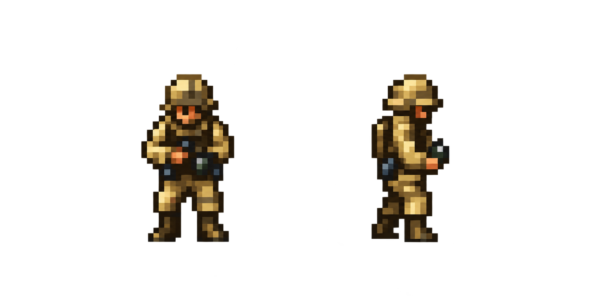
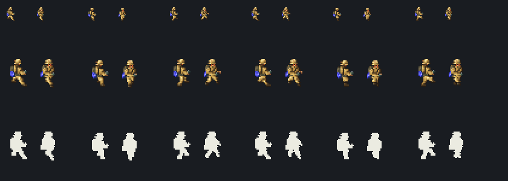

← Approved Grenadier design Grenadier · run revision v23 Rebuilt East and South East poses, coherent camera depth and conspicuous blue equipment. These exact twelve frames were approved on 21 October. The rejected v17 remains historical.
Direction A Direction B Pause Restart Speed ½× 1× 2× Display Native 1× 2× 8× Stage
East · Before 1995 MS-DOS East · After Native v23 South East · Before 1995 MS-DOS South East · After Native v23 Twelve rebuilt native frames share the original six stages and 7.5fps clock, with fixed origin [54,40]. E/SE direction and motion approved 21 Oct. Other rejected directions and full infantry sheets remain in production. Display 1×/2× checks actual pixel density; 8× exposes anatomy.
Approved front/profile reference 
Native distance and silhouette audit 